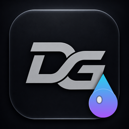
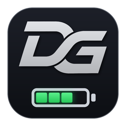
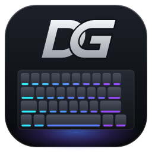
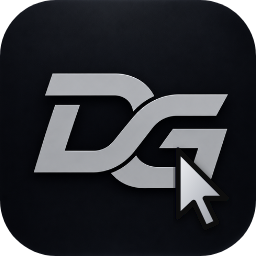
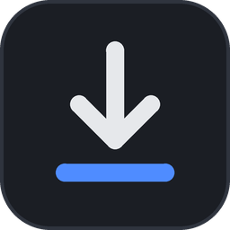
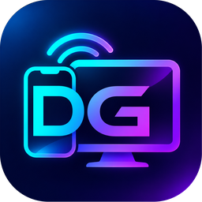
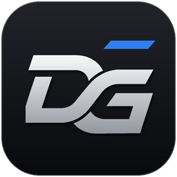

Aplicativos de David Gigliotti
Escolha um para baixar.

DG AquaView
DG AquaView é um monitor de water cooler para Windows. Exibe temperatura, uso, clocks e ventoinhas da CPU e GPU, com histórico em gráfico, mini janela sobre a tela e alertas. Envia os dados para o painel do cooler, inicia automaticamente com o Windows e roda em segundo plano na bandeja. Leve e em português.

DG Battery
Mostra a bateria dos seus periféricos sem fio direto na barra de tarefas do Windows, em anéis discretos ao lado do Iniciar. Funciona com mouses, teclados, fones e controles em 2.4 GHz e Bluetooth: Logitech, Razer, Corsair, SteelSeries, HyperX, Xbox, DualSense, Attack Shark, Ajazz e outros. Avisa quando a bateria está fraca ou carregando, estima quanto tempo ainda dura e aparece por cima dos jogos quando você quiser. Leve, sem anúncios.

DG KeyControl

DG Pointer

DG Scanner
Instalador do DG Scanner

DG Second
Segunda Tela

DG SystemCare
DG SystemCare (Instalador)
Instalador do DG SystemCare